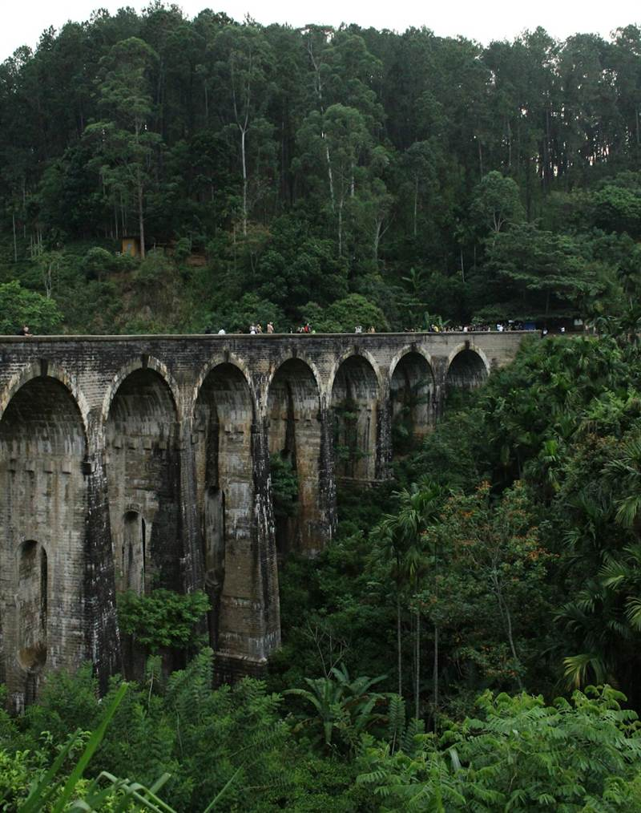

7 Day Highlights · Nature
Hill Country and Wildlife
Tea estates, mountain walks and an elephant safari on the way down to the sea.
Airport → Kandy → Nuwara Eliya → Ella → Udawalawe → Mirissa → Airport
From US$886 per person, two adults sharing. Sample estimate in USD, before seasonal changes. Flights not included.
At a glance
- Length
- 8 days, 7 nights
- Style
- Nature and walking
- Pace
- Balanced. A morning plan and an afternoon plan.
- Stays
- Boutique
- Transport
- Private car and driver
- Time on the road
- About 16 hours in total
- Best months
- January to April
- Availability
- Not checked yet. We check real dates when you ask for a quote.
- Price basis
- Per person, two adults sharing one room
Day by day
Day 1
Kandy
Drive from the airport, about 3 h 12 min
Free time.
Day 2
Kandy
- Royal Botanic Gardens, Peradeniya
- Temple of the Sacred Tooth Relic
Day 3
Nuwara Eliya
Drive from Kandy, about 2 h 30 min
Free time.
Day 4
Ella
Scenic train from Nuwara Eliya, about 3 h
- Before you leave Nuwara Eliya: Tea factory tour and tasting
Day 5
Ella
- Ella Rock hike with a guide
- Little Adam's Peak walk
Day 6
Udawalawe
Drive from Ella, about 2 h 30 min
- Udawalawe jeep safari
Day 7
Mirissa and Weligama
Drive from Udawalawe, about 2 h 30 min
Free time.
Day 8
Departure
Drive from Mirissa, about 3 h 12 min
Drive to the airport for your flight.
Where you stay
- Kandy, 2 nightsColonial bungalow hotel. Boutique hotel. Breakfast. Above the city, 15 minutes to the temple.
- Nuwara Eliya, 1 nightTea estate bungalow. Boutique hotel. Half board. On a working tea estate, 25 minutes from town.
- Ella, 2 nightsTea hill boutique hotel. Boutique hotel. Breakfast. 5 minutes by tuk tuk from town.
- Udawalawe, 1 nightSafari camp tents. Eco lodge. Half board. 10 minutes from the park gate.
- Mirissa and Weligama, 1 nightClifftop boutique hotel. Boutique hotel. Breakfast. Above a quiet bay, 5 minutes to Mirissa beach.
Included
- Private car and driver
- Train seats from Nuwara Eliya to Ella
- Breakfast daily, some dinners
- Tea factory visit
- Udawalawe jeep safari
Not included
- International flights
- Travel insurance
- Sri Lanka visa or ETA
- Most lunches
- Tips